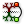

 Relative Items
Component Index > Grasshopper > Sets > Tree > RelItem2
Retrieve a relative item combo from two data trees
Inputs
| Name | ID | Description | Type |
|---|---|---|---|
| Tree A | A | First Data Tree | Tree of Generic |
| Tree B | B | Second Data Tree | Tree of Generic |
| Offset | O | Relative offset for item combo | Text |
| Wrap Paths | Wp | Wrap paths when the shift is out of bounds | Boolean |
| Wrap Items | Wi | Wrap items when the shift is out of bounds | Boolean |
Outputs
| Name | ID | Description | Type |
|---|---|---|---|
| Item A | A | Item in tree A | Tree of Generic |
| Item B | B | Relative item in tree B | Tree of Generic |
Copyright © 2016 Robert McNeel & Associates.